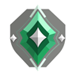

kixot in a nutshell.
I MAINLY main controller... but also like to play senti (yea hehe), but like you should know that its wayyy toooo EZZZZZ for me.
- smoke diff
- immortal
- ez
- tryhard
- bad at the game
- 0 sleep

Eliminators
People in the office
THE DOJO
the training dojo
a first person range that roasts you lovingly. aimlabs could never..
Enter the dojooptimized for desktop